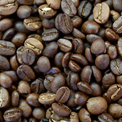

珈琲の種類
キリマンジェロタンザニアのキリマンジャロ山のふもとの町が栽培地。酸味と苦味がバランス良く調和し、甘いコクと上品な香りに優れたコーヒーです。雑味の無い後味で飲みやすく、自然の恵みを感じるナチュラルなテイストが楽しめます。 |
|
グァテマラ原産地のグァテマラは、メキシコの「ホンジュラス」に位置。国土の70％の山岳地帯で、中米有数のコーヒー生産国です。果実香の酸味が少し強めですが、苦味とのバランスの良いコーヒーでストレートで飲むと、よりそのコクと甘い香りが楽しめます。 |
|
ブルーマウンテン国土の80%が山地であるジャマイカの中でも、標高800～1200mのごく限られた地域のみで栽培される最高級のコーヒーブランドです。苦味と甘味、酸味、香りとコクすべてが絶妙なバランスを保ち、繊細なテイスト生み出していて特にその優れた芳香は、他の香りの薄いコーヒー豆とブレンドされる事も多くあります。 |
|
|  | モカもっとも古いコーヒーブランド。多くの人に支持されるコーヒーで、特に日本国内での人気が高いコーヒーです。独特の強い酸味と、モカ特有の果実の様な豊かな香りが特徴で甘みとコクを堪能できるコーヒーです。 |